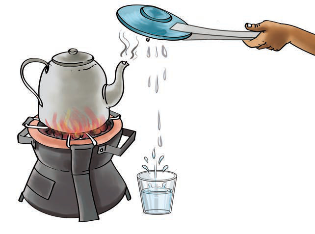

Results
As the liquid water boils, water vapour escapes from the kettle’s spout. When the water vapour comes into contact with the cool surface of the mirror or glass, it condenses into small water droplets. This demonstrates that water vapour changes back into liquid water when it cools.
Conclusion
The experiment demonstrated the process of changing gas (water vapour) into a liquid state (liquid water) through condensation.
Water can exist in various states such as solid, liquid and gas. When the temperature of water drops below 0 °C (32 °F), it turns into a solid form called ice. As the temperature rises above 0 °C (32 °F), the ice slowly melts and turns into liquid water. At 100 °C, water boils to form water vapour. When the vapour comes in contact with cool surface, it changes to a liquid as shown in